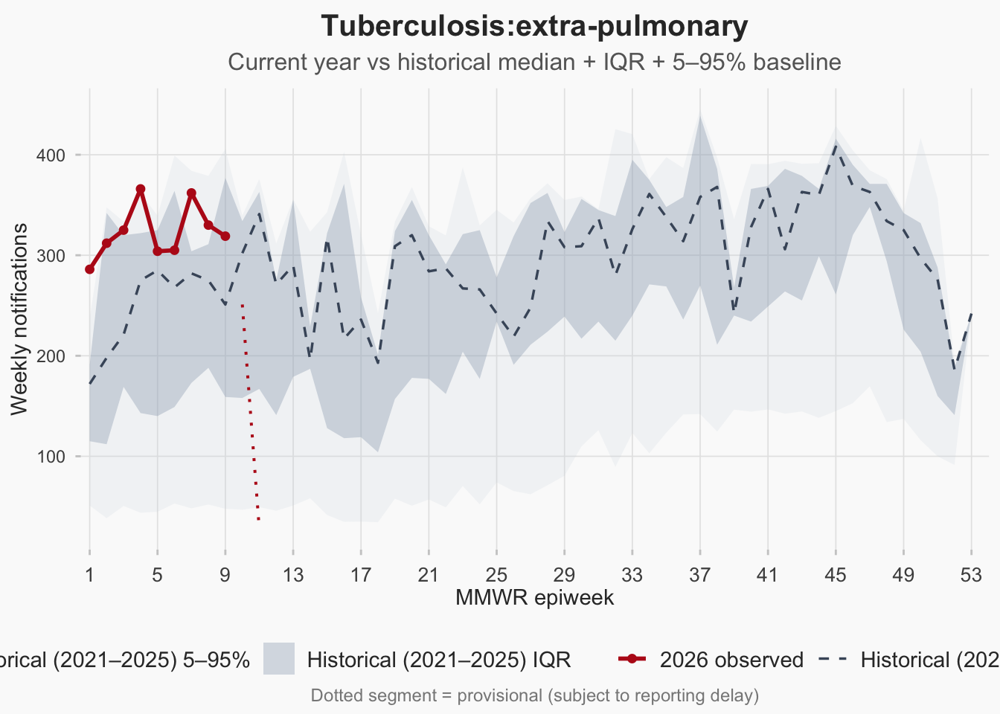

Trending Conditions
Signal detection, emerging hotspots & alert log
NoteDevelopment Roadmap — Trending / Signal Detection
| Phase | Feature | Status |
|---|---|---|
| v0.1 | Recent surge table — conditions with biggest % increase (last 14 days vs prior 14) | ✅ Done |
| v0.1 | Interactive trend sparklines for flagged conditions | ✅ Done |
| v0.2 | EARS-C2 + sliding-window CUSUM signal detection | ✅ Done |
| v0.2 | Province × condition signal heatmap (drill-down) | ✅ Done |
| v0.2 | Persistent alert log (data/processed/alerts.rds) |
✅ Done |
| v0.3 | Analyst notes & manual triage layer | 🔲 Planned |
| v0.3 | Automated alert email / webhook on threshold breach | 🔲 Planned |
| v0.4 | Auto-trigger EpiNow2 forecasts for flagged conditions | 🔲 Planned |
Data pipeline: R/prepare_dashboard_data.r → data/processed/agg_national.rds Algorithms: R/signal_detection.r (detect_signals_batch, cusum_sliding, build_alert_log)
National Signal Log — Last 28 Days
EARS-C2 (rolling 14-day z-score, threshold = 3) and one-sided CUSUM (slack k = 0.5, threshold = 5) applied to each condition’s daily series. Signals are de-duplicated to one row per (condition × method × episode) and persisted to data/processed/alerts.rds.
NoteStabilising z-scores for rare conditions
The baseline SD used in the EARS-C2 z-score is replaced by \(\tilde s = \max\!\bigl(s,\,\sqrt{\max(\bar n,\,1)}\bigr)\) — i.e. at least the Poisson-implied SD given the baseline mean (sd_floor = "poisson"). EARS signals are additionally suppressed when the baseline mean is below 0.5 cases/day (min_baseline_mean = 0.5); these rows are still computed but shown only via CUSUM, which is more stable on sparse counts. See Methods → Signal Detection for the full rationale.
Province × Condition Signal Heatmap
Conditions on the y-axis, provinces on the x-axis; cell colour indicates the peak CUSUM score within the last 28 days. Empty cells = no signal.
Recent 14-day Surge — Quick Triage
Conditions ordered by absolute change in the most recent 14-day window vs the preceding 14 days. Use the signal table above as the primary trigger; this view is a complementary, formula-free sanity check and is not delay-corrected.
Seasonal Context — Top Flagged Condition
Current epiyear (solid red) overlaid on the historical median + IQR + 5–95% ribbon from the prior five years. The dotted segment marks provisional weeks inside the reporting-delay window.

Trend Sparklines — Top Flagged Conditions
TipRelated Sections
- Forecasts & Scenarios — short-term predictive models fed by signals
- Burden of Disease — quantified health impact of conditions
- By Condition — condition-level national trends
- By Province — province-level surveillance detail
- Methods — signal detection methodology documentation